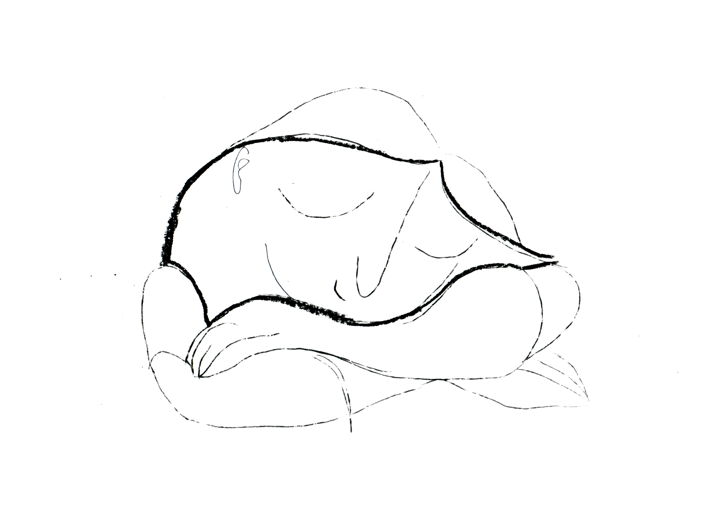

Line drawings inspired by Picasso's Jeune Fille Endormie
The concept for this issue of Honi Soit was 'Miasma'. The idea of miasma is entrenched within the medieval understanding of universal balance. This Middle Ages sense of worldly order eventually dabbled into the olfactory, attributing medical wellbeing to these values.
'Miasma' presented the idea that bad energy could be pregnant in air, water and earth, afflicting humans with illness and pain. This evokes the imagery of the unsettling, providing the perfect title to all things vampiric, dark, chronic, awake, neon...
The artwork I created for this issue has been one of my favourites to date. The reference point of Picasso's Jeune Fille Endormie fulfilled every fantasy I had about line art experimentation and allowed for an incredibly diverse use of material.
To me, 'Miasma' reflects organicness, a certain natural order of decay which intrinsically ties to human life, purpose and meaning. Each print was produced via an experimental etching technique, which included a surface of oil pastel, paper and a "stylus". The lines in the following sketches were created using entirely oil pastel, ink, felt-tip pen and chance.
